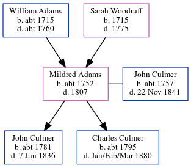

Mildred Culmer (née Adams) c1752 - 1807
[ Home ] | [ Calendar ] | [ Surnames Index ] | [ Errors ] | [ Family History ]The child of William Adams and Sarah Woodruff, Mildred Adams, the 5 times great-grandmother of Nigel Horne, was born in Stourmouth, Kent, England c. 17521 and married John Culmer (a labourer with whom she had 2 children: John and Charles) in Ash, Kent, England on 27 Mar 17791.
She died in 1807 in Kent1 and was buried in Stourmouth on 8 Feb 18072.
Parents
- William was born c. 1715
- Sarah was born in 1715
Children
- John was born c. 1781
- Charles was born c. 1795
Citations
- Kent, England, Tyler Index to Parish Registers, 1538-1874 Online publication - Provo, UT, USA: Ancestry.com Operations, Inc., 2010. This collection was indexed by Ancestry World Archives Project contributors.Original data - Frank Watt Tyler. The Tyler Collection. Canterbury, Kent, England: The Institute of Herald
- Familysearch.org (www.familysearch.org)
Family Tree
Map
Generated by ged2site. Last updated on Jul 3, 2024